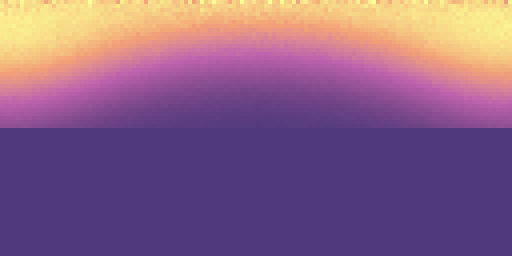

**Assignment 2 Report**
Student name: XXXX
(##) About this template
* Structure your report using numbers and titles following those of the assignment.
* For every task include all images you generated. dirt will generate both an `.hdr` and an sRGB tonemapped `.png` image of your rendering. Use the `.png` in the comparisons in your report.
* For tasks where we provide a reference image, include a comparison of your output to the reference (see examples of this below)
* Include descriptions of encountered problems, a list of external libraries that you used (if applicable) and the time you spent on each task.
For an overview of Markdeep and its syntax, see the [official demo document](https://casual-effects.com/markdeep/features.md.html) and
the associated [source code](https://casual-effects.com/markdeep/features.md.html?noformat).
(##) Feedback
Use this section to provide feedback about the assignment.
(##) Task 1: Sampling Distributions
Uniform Points on a Spheres:
Uniform Points on a Hemisphere:
Cosine-weighted Points on the Hemisphere
Cosine-power-weighted Points on the Hemisphere
(##) Task 2: Sampling Materials
Lambertian PDF
Lambertian Sampled
Rotated Lambertian PDF
Rotated Lambertian Sampled
Phong PDF
Phong Sampled
Rotated Phong PDF
Rotated Phong Sampled
Blinn-Phong PDF
Blinn-Phong Sampled

Rotated Blinn-Phong PDF
Rotated Blinn-Phong Sampled
Beckmann PDF
Beckmann Sampled
Rotated Beckmann PDF
Rotated Beckmann Sampled
(##) Task 3: Integrators
Normal Integrators
Ambient Occlusion Integrators
Phong Ball Scene
Blinn-Phong Ball Scene
Odyssey Scene
Veach Material Integrator Scene
Beckmann Ball Scene
Oren-Nayar Ball Scene
(##) Task 4: Improved and Quasi Monte Carlo Sampling
Stratified Sampler Checker Scene